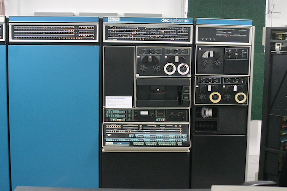
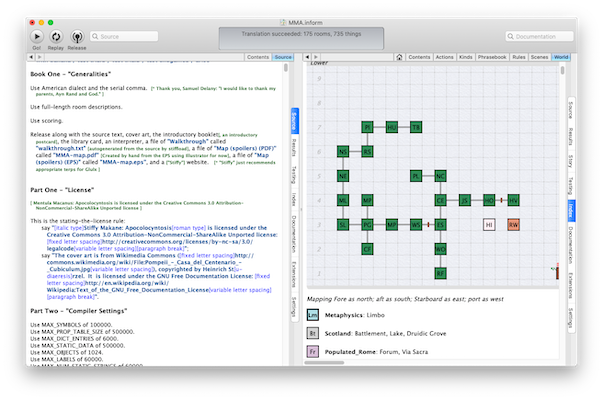
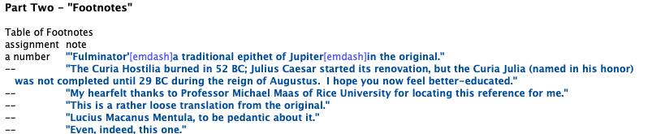

Created: 2022-04-28 Thu 15:35
https://github.com/athornton/i7-talk-2020
CC BY-NC 4.0
Get offa my lawn!
"Interactive fiction."
Good way to prototype puzzle design, for instance.

http://www.literateprogramming.com/adventure.pdf may be the best paper ever written about a computer program.
(KI-10 Picture from Wikipedia user Gah4, CC BY-SA 4.0)
https://github.com/historicalsource/zork
Ported to FORTRAN by Bob Supnik. That's the one you've played.
https://github.com/historicalsource/
The Z-Machine was the magic that enabled easy porting and very big (for the time) games.
"Hello World" by Adam Thornton.
Hello World is a room.
Note that identifiers can have spaces (and other odd characters) in them.

I maintain the Linux CLI port.
Far, far more output text than any commercial text adventure ever.
Rooms are topologically connected, there are objects, some of which are mobile…
The language encourages this: objects are "off-stage", "remove X from play," and sense-modelling and object-player interaction are primitive. Cf. TADS 3.
Scotland is a region. Edinburgh, Glasgow, and Aberdeen are rooms in Scotland.
Aberdeen is northeast of Glasgow. Edinburgh is east of Glasgow.
Glasgow is a room. "Gray and grim." [ This sets the "initial appearance" property. ]
The wooden table is a supporter in the kitchen. "A wobbly wooden table rests unsteadily on the floor." The description is "The table looks unsteady."
Understand “wobbly” and “unsteady” as the table. [ Synonyms ]
Some butter is on the wooden table. The butter can be edible. It is edible. [ Properties ]
[ Define a new kind, and then use it as an adjective. ]
Shininess is a kind of value. The shininesses are shiny and dull.
A coin has a shininess. A coin is usually dull.
The Bank is a room. The penny is a shiny coin in the Bank.
Understand the command "feed" as something new. Understand "feed [something preferably held] to [something]" as feeding it to. Understand "feed [something] [something preferably held]" as feeding it to (with nouns reversed).
Feeding it to is an action applying to two things.
Carry out feeding it to:
if the second noun is not a person, instead try inserting the noun into the second noun;
if the second noun is the player, instead try eating the noun;
instead try giving the noun to the second noun.
The most important ones are "before", "instead", "after", and "check <action>", "carry out <action>", "report <action>".
Instead of a suspicious person (called the suspect) burning something which is evidence against the suspect when the number of people in the location is at least two, try the suspect going a random valid direction.
[ "Instead" is the rulebook name; "(called the suspect)" creates a scoped variable for reference within the same rule. "Try" kicks off a new action and all its rulebooks. "Valid" is an adjective applying to the kind "Direction". ]
For printing a locale paragraph about a thing (called the item) (this is the forcibly set personal pronoun from items on supporters rule):
if the item is a supporter and the item does not enclose the player
begin;
repeat with the possibility running through things on the item
begin;
if the possibility is a woman, forcibly set the female pronoun from the possibility;
if the possibility is a man, forcibly set the male pronoun from the possibility;
if the possibility is a neuter animal, forcibly set the neuter pronoun from the possibility;
end repeat;
end if;
continue the activity.

"Equation Playground" by Adam Thornton
Part Zero - Definitions
Include Metric Units by Graham Nelson.
Part e - Equations
Equation - Volume of a square parallelepiped
V=hl^2
Where V is a volume, h is a length, and l is a length.
Equation - Area of a square
A=l^2
Where A is an area and l is a length.
Part pi - Objects
Classroom is a room
The infernal prism is a thing in Classroom. It is fixed in place.
Carry out examining the infernal prism:
Let V be a random volume between 10 cu m and 1000 cu m;
Let A be a random area between 10 sq m and 100 sq m;
let l be given by the area of a square;
let h be given by the volume of a square parallelepiped;
say "The infernal prism shifts again. Now its height is [h]. Somehow you know its volume is [V] , so the side of its base must be [l] and the area of its base [A].";
stop the action.
http://inform7.com/talks/2018/06/09/london.html http://inform7.com/talks/2019/06/14/narrascope.html